Instalační pokyny pro Windows
Tyto pokyny jsou výhradně pro Windows. Instalaci pro macOSu najdete ZDE. Linux není podporován. Pokud máš Linux, prosím, ozvi se hlavnímu lektorovi (kamil.sevecek@czechitas.cz).
Na kurzu budete potřebovat Javu (JDK) a programátorský editor IntelliJ IDEA (Community Edition).
Následujte tento postup:
-
Kompletní přednastavený archív si můžete stáhnout z tohoto odkazu:
Java-Training.7z
Zvolte Stáhnout odkaz jako... (Save Link As...) do složky Stažené soubory (Downloads).
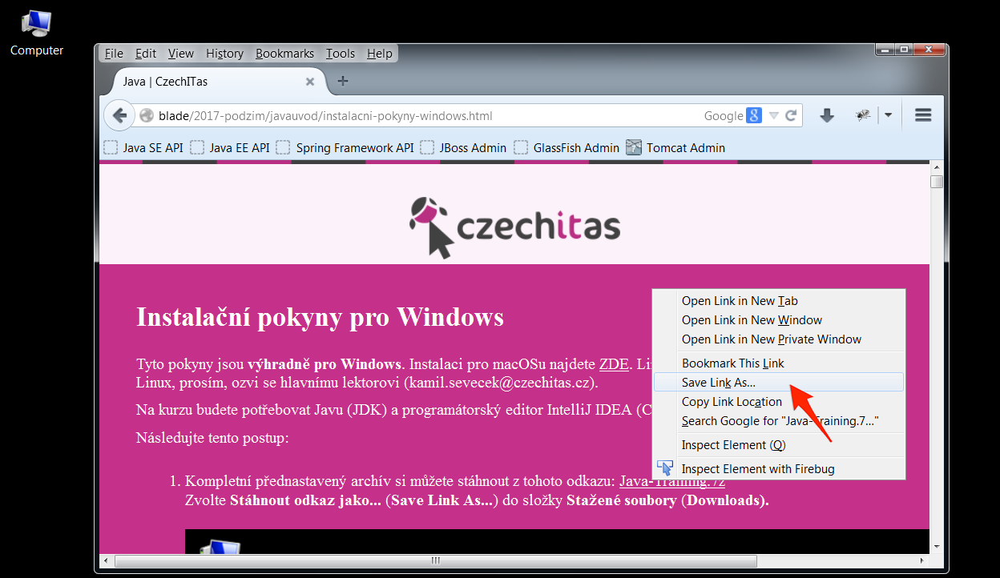
-
Klikněte pravým tlačítkem na soubor Java-Training.7z ve složce Stažené soubory (Downloads).
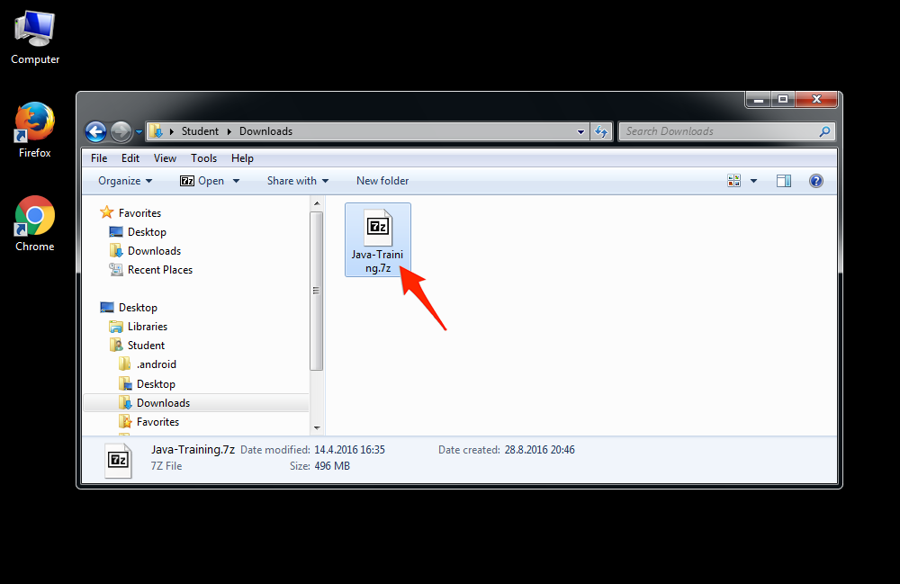
-
Pokud je možné v kontextové nabídce zvolit
7-Zip -> Otevřít, vyberte tuto volbu a pokračujte až k bodu rozbalování.
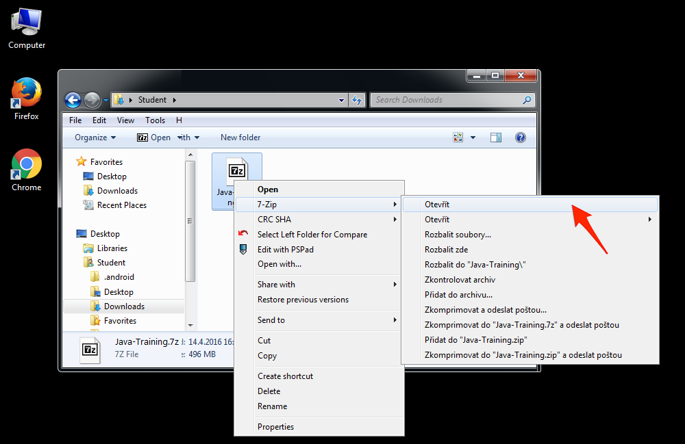
-
Pokud tato volba není k dispozici, zkuste ještě na archív dvakrát kliknout.
Pokud se objeví následující okno, pokračujte také k bodu rozbalování.
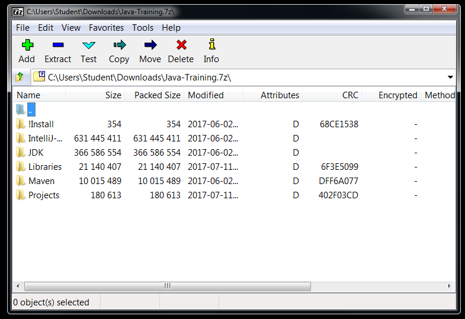
-
Pokud se naopak objevila chybová hláška Windows, že soubor nelze otevřít, nemáte nainstalovaný archivační software 7-Zip.
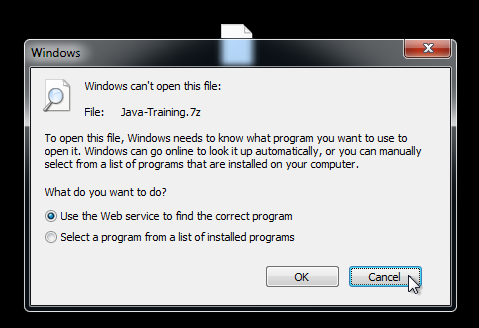
-
Musíte si jej stáhnout z adresy
www.7-zip.org
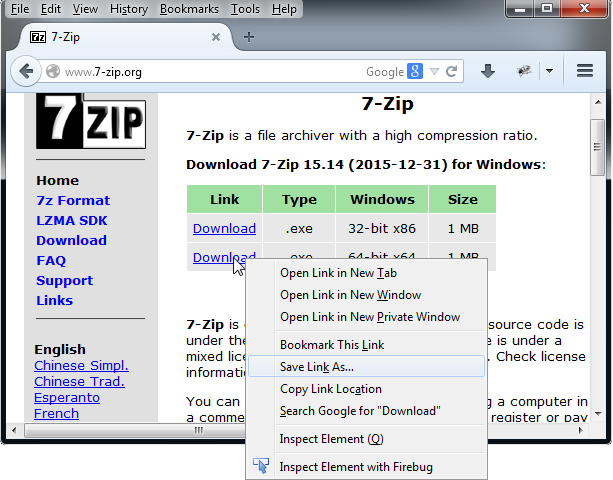
-
I tento soubor (7z1514-x64.exe) si stáhněte do složky Stažené soubory.
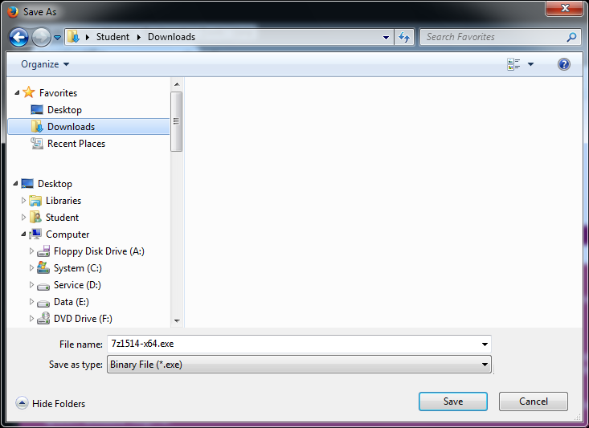
-
Dvojklikněte na 7z1514-x64.exe a spusťte instalaci.
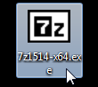
-
Potvrďte bezpečnostní varování.
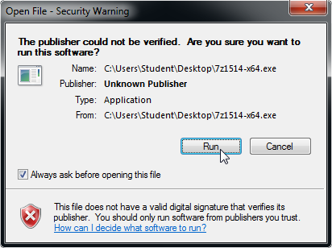
-
Potvrďte cílovou instalační složku.
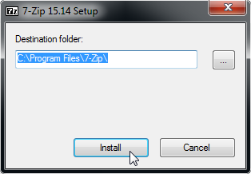
-
Nyní když kliknete pravým tlačítkem myši na archív Java-Training.7z ve složce Stažené soubory (Downloads),
můžete zvolit 7-Zip -> Otevřít.
-
Uvidíte okno jako v bodě 4.
-
Zvolte v záhlaví okna volbu Rozbalit (Extract)

-
Aplikace 7-Zip se vás zeptá, kam chcete archív rozbalit. Zadejte
C:\Java-Training.
Pozor na malá a velká písmena a pomlčku.
Je nezbytně nutné rozbalit vše právě doC:\Java-Training. V jiné složce (například na ploše nebo ve vaší složce Dokumenty) aplikace nebudou fungovat.
Případný dotaz na přepsání existujících souborů potvrďte. Žádný strach, o svoje případné projekty z minula nepřijdete.

-
Po dokončení rozbalování otevřete ve správci souborů (ikona Tento počítač) složku
C:\Java-Training\IntelliJ-Community.

-
Uchopte soubor IntelliJ-Community.lnk (s ikonkou IntelliJ IDEA) a přetáhněte ho na plochu.
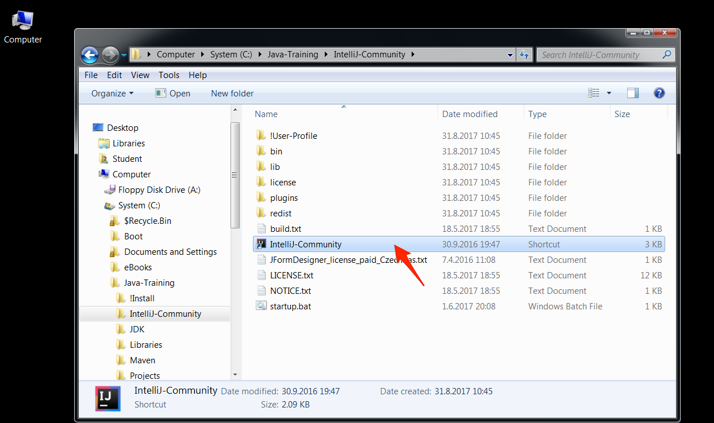
-
Tímto zástupcem na ploše můžete spustit editor IntelliJ IDEA.
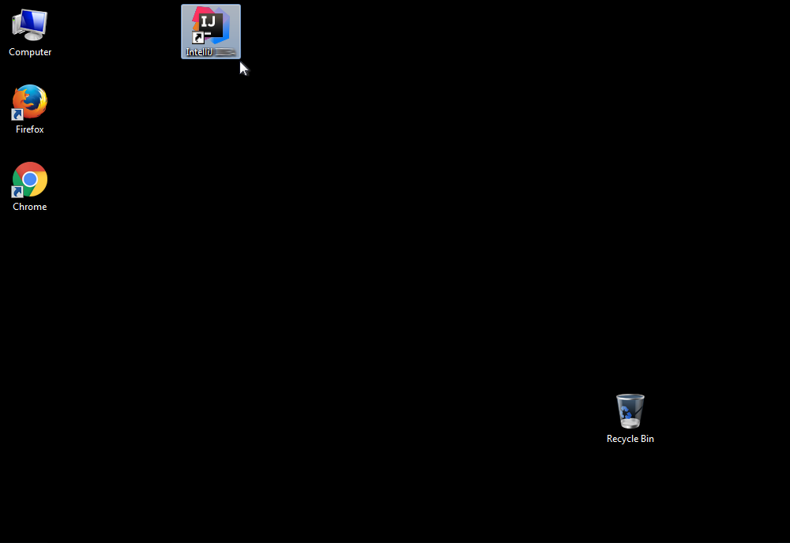
- Pokud jste vše udělali správně, můžete zkusit otevřít ukázkovou aplikaci a spustit ji.
Ukázková aplikace
Zkuste si ještě pustit ukázkovou aplikaci, ať ověříte, že máte správně nainstalovanáno.
-
Spusťte IntelliJ IDEA pomocí zástupce na ploše (pokud už neběží).
-
Zvolte Otevřít (Open)
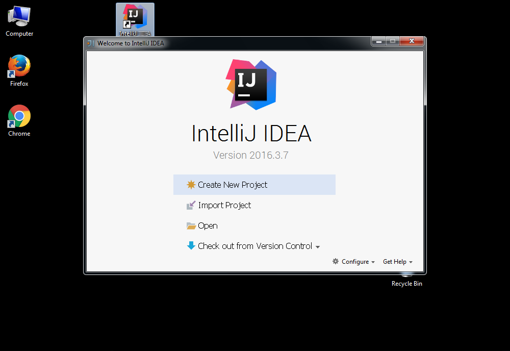
-
Ukázkovou aplikaci najdete ve složce
C:\Java-Training\Projects\DemoApplication.
Pozor! Nikdy nerozbalujte složky dvojitým kliknutím. Jednotlivé složky je nutné rozklikávat pomocí trojúhelníkové šipky před jejich jmény. Až najdete složkuDemoApplication, potvrďte tlačítkem OK.
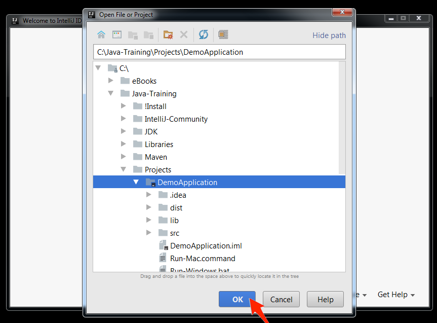
-
Otevřením prvního projektu začne IntelliJ IDEA indexovat celou Javu,
kterou máte nainstalovanou na počítači.
Vydržte, dokud nezmizí ukazatel průběhu (může trvat i pár minut).
Následně se obarví spouštecí šipka do zelena.
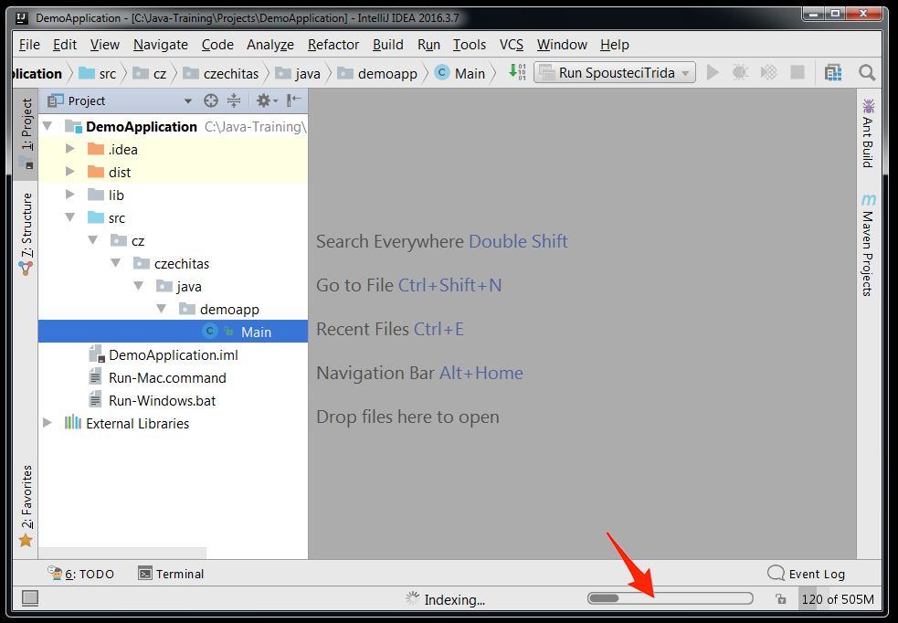
-
Zvolte vpravo nahoře zelenou šipku Run
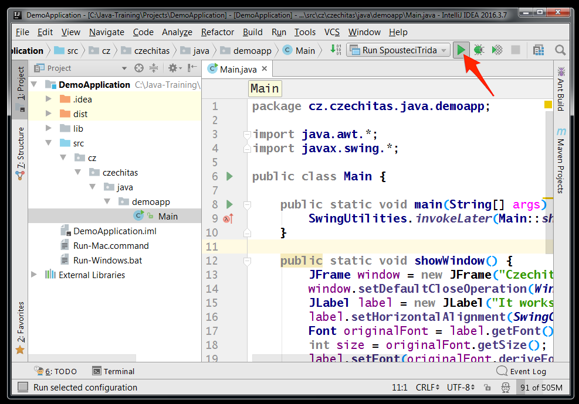
-
Měli byste vidět tuto malinkou aplikaci
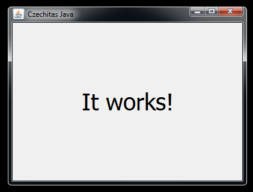
Pokud se někde něco nepovede, nezoufejte. Na kurzu vám pomůžeme.